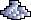

História
Tibia é um jogo eletrônico multijogador (MMORPG) gratuito, desenvolvido pela CipSoft. Criado em 1997, é um dos jogos mais antigos do gênero. Nele, os jogadores podem desenvolver as habilidades de seus avatares, buscar tesouros, resolver enigmas e explorar áreas como cidades, masmorras, florestas, desertos, ilhas, praias, minas, etc. Os personagens podem disputar lutas entre si ou com criaturas, tais como monstros, dragões, demônios, orcs, utilizando armas e magias.
O jogo foi desenvolvido utilizando a linguagem de programação C++ em ambas versões de Windows e GNU/Linux.
Tibia é um jogo que pode ser jogado gratuitamente por tempo indeterminado, porém, há a opção de se obter uma assinatura (também conhecida como P.A., P.T. ou Pacc), que oferece ao jogador acesso exclusivo à: áreas de caça, magias, roupas (outfits) etc., o que pode facilitar o jogador a ganhar mais pontos de experiência (EXP) e ter maior satisfação no jogo em relação àqueles que não têm a assinatura.
Os gráficos do jogo são em duas dimensões, apresentando pouquíssimos detalhes, sendo possível notar com facilidade os 'pixels' da tela. Em 1999 havia planos para implementação de som no jogo, porém, até hoje, Tibia não tem som, apenas textos como onomatopeias indicando o som de alguma criatura ou instrumento musical.
Diferentemente dos RPGs de console, Tibia não possui um objetivo predeterminado a ser alcançado: os jogadores determinam a forma como desejam seguir as suas aventuras assim como outros jogos de MMORPG (Massive Multiplayer Online Rolling Playing Games), e o mundo continua existindo e mudando mesmo que os jogadores não estejam lá. Quando um jogador entra no mundo, ele é representado por um personagem ou avatar (chamado no jogo de character). Tudo o que acontece com um jogador é registrado no servidor em tempo real, assim, quando ele voltar, o seu personagem estará com os mesmos atributos e características de quando saiu.
Os jogadores podem criar vários personagens em uma mesma conta, mas caso perca a sua conta ou seja roubado, perderá todos os personagens daquela conta, aconselhando a criar não mais que três personagens por conta. Cada um desses personagens pertence a apenas um mundo do jogo, porém é possível ter mais de um personagem no mesmo mundo. O jogo possui atualmente 81 mundos, cujos servidores estão na Alemanha e nos Estados Unidos; os mapas e os locais de cada um desses mundos são os mesmos, o que muda de um para outro são algumas regras de combate jogador contra jogador e a comunidade de jogadores.
Cada personagem pode explorar e interagir com o universo do jogo e enfrentar diversos inimigos controlados pelo computador, contando que os jogadores gratuitos estão limitados a esses atributos. Podendo também se relacionar, conversar, lutar com as criaturas de outros jogadores e completar missões (quests).

O jogo teve o seu máximo de jogadores online simultaneamente em Novembro de 2007, atingindo o número de 64.028 jogadores conectados simultâneamente. Desde então, houve uma redução lenta na comunidade de jogadores de Tibia. O jogo, segundo boa parte dos jogadores, está abandonado por parte da CipSoft; empresa que fundou e o administra. No início do desenvolvimento do jogo, havia disponível no site do jogo uma lista de coisas que faltavam em Tibia. Em mais de 15 anos de jogo poucas destas coisas foram implementadas.
Há uma grande quantidade de jogadores que vendem seus personagens no Tibia por dinheiro da vida real (RL, Real Life) - (a venda de "characters" é proibida - Account Trading or Sharing), onde já foram registrados roubos do dinheiro e outros vários problemas. A venda de itens e "gps", proibida também, virou fonte de lucro para alguns jogadores. Como não há fiscalização dentro do jogo, "bots" com level 8 usam o canal de troca para anunciar sites de propaganda, venda de itens, venda de trials, venda de personagens, propaganda de servidores piratas etc.
Em 2001 havia textos na página do jogo dizendo que na fase final do projeto de Tibia o código dos servidores e o protocolo de comunicação do jogo seriam publicados.
Vocações
Todos os jogadores iniciam no level 1 em Rookgaard/Dawnport, uma espécie de ilha-treinamento e ao chegar ao level 8 devem escolher uma entre quatro vocação para jogar e assim serem transportados para o 'jogo principal', comumente chamado de mainland. São, as quatro vocaçoes:
• Knight
Um Knight é um guerreiro forte e sempre pronto para uma batalha. Em combate em grupo, o Knight se posiciona sempre na linha de frente para proteger os demais jogadores. Ele é aquele que leva os maiores hits e não se rende ao ser cercado por muitos inimigos. Assim, as vantagens do knight são um forte escudo e armas. O Knight causa Dano Físico, mas ele também pode fazer um tipo secundário de dano usando armas mágicas encantadas, por exemplo. Devido à sua força e usando certas táticas, um Knight é capaz de matar criaturas muito fortes.
O equipamento de um Knight é classificado como pesado, e portanto, apenas utilizável por ele, pois ele seria o único com força suficiente para usar essas armaduras e armas. Ele pode empunhar swords (espadas), axes (machados) ou maças (clubs). Sua força bruta lhe dá maior capacidade para carregar equipamentos e itens em relação as outras vocações.
• Sorcerer
Um Sorcerer, mestre arcano das artes negras, dedica sua vida ao estudo da magia. Ele é profundamente convicto que superioridade encontra-se na sabedoria e não na força física. Sorcerer causa dano mágico e, assim como o Druid, ele é capaz de controlar elementos. Neste caso o fogo e a eletricidade.
Usando seu conhecimento nas artes destrutivas o Sorcerer é o único capaz de criar as poderosas runas de Sudden Death. Também é capaz de atacar múltiplos inimigos de uma vez como nenhuma outra vocação.
O equipamento de um Sorcerer é classificado como leve, geralmente são usadas wands, mantos ou capas ao invés de armaduras pesadas e spellbooks no lugar de escudos.
• Paladin
O Paladin, um arqueiro sagrado, rápido e infalível, ataca mortalmente seus inimigos à distância com tal velocidade que ele parece ser invisível para seus alvos. Paladin causa dano físico, mas também domina o dano sagrado, devido a sua força espiritual, e usa algumas magias desse gênero para derrotar rapidamente seus oponentes. Seu potencial mágico é tão equilibrado quanto sua resistência física.
Em batalha, um Paladin procura manter seus adversários o mais longe possível para usar sua vantagem de ser um lutador de distância. Ele precisa estar em movimento o tempo todo para evitar se tornar um alvo.
O equipamento de um Paladin consiste em armas à distância, como bows, crossbows, spears entre outras. Paladins podem usar a Assassin Star, uma das armas mais poderosas do Tibia.
• Druid
O Druid é devotado e relacionado com a natureza, de onde provém toda a sua força. Ele pratica o controle sobre elementos da natureza para o benefício de todos os humanos. Druids conhecem a arte da cura, e possuem mais magias curativas do que qualquer outra vocação. O Druid causa danos mágicos. Além de rods, ele pode usar elementos como ice ou earth, por exemplo.
O equipamento de um Druid é considerado leve, além dos mantos ou capas no lugar de armaduras e spellbooks para sua proteção, ele também faz uso de rods.
Quests Notáveis
• Annihilator Quest
A mais temida nos tempos aúreos do jogo, a Annihilator Quest faz com que uma equipe de obrigatoriamente 4 jogadores acima do level 100 enfrentem 6 demons de uma só vez, sendo duas das criaturas neecessitarem serem mortas para a passagem ser liberada e a porta aberta.
A tarefa não era nada fácil, e os Del'Toro em Isara foram os primeiro a conseguir terminar a quest mas que por muitos ainda se considerava um desafio e um sonho para os jogadores. No fim, você poderia escolher uma entre 4 recompensas, 3 delas, poderosíssimas: Magic Sword, Demon Armor, Stonecutter Axe ou um Present que contém um ursinho de pelúcia, cujos primeiros jogadores não sabiam, e que até hoje se especula se há algum fim nesta recompensa ou é apenas um item de colecionador ou alguma forma da CipSoft brincar com a comunidade.
 >
>
• Banshee Quest
Quest extremamente complexa, que requeria level 55 e muita paciência, pois além de ser enorme, há vários trials, envolvendo labirintos, respostas corretas a NPCs, monstros e afins
Era feita geralmente em guildas, sua recompensa é, até hoje: Boots of Haste, Giant Sword, Tower Shield, Stealth Ring, Stone Skin Amulet e 10.000 Gold Coins.

• Desert Quest
Praticamente uma quest obrigatória ao chegar no nível 20, também conhecida como 'quest dos 10k', era muito incentivada pois o prêmio era de 10.000 Gold Coins, o que era um belo impulso para um jogador iniciante na época
A quest foi criada em 2001 e demorou-se anos para descobrir todos os seus segredos, mas depois do spoiler, se tornou comum ignorar o role-play e ir direto para a última parte onde cada vocação exige um sacrifício e você é teleportado para a sala de recompensas.

Jogadores Lendários
• Bubble
Bubble é, provavelmente, um dos mais antigos personagens do Tibia. Foi Top level geral por muito tempo, além de ter sido a primeira de todo o jogo a conquistar o level 100 e o 200.
Existe muitos rumores sobre a Bubble, sobre os itens que ela possui e os lugares que já esteve, afinal, ela poderia ter tido acesso à vários itens lendários que existiram em sua época. Muitos dizem que ela já dividiu sua conta com outros jogadores. Na vida real seu nome é Janice e mora com seu marido Nietzsche (também um jogador e ex-gamemaster). Os dois vivem em Hong Kong, China.
• Eternal Oblivion
Eternal Oblivion jogou em Amera e foi considerado por muito tempo o melhor jogador de todos os tempos. Ele foi o primeiro jogador a alcançar o level 250.
Tendo sempre apenas se identificado como Steve, foi um monstro na sua época, pois no PvP (Player Versus Player) era imparável, além de conseguir subir de níveis muito rápido. Já foi inclusive banido por 'destructive behavior' anteriormente junto com sua guilda.
• Lord Paulistinha
O brasileiro mais conhecido do Tibia, Carlos Locatelli, foi um Knight que jogou no servidor de Elera e foi o primeiro jogador a alcançar o level 400. Conhecido por sempre participar das guerras e dominar o servidor com sua guilda, acabou com um fim inusitado.
Depois de uma polêmica entrevista ao Fansite TibiaBR onde admitiu que usou softwares não-oficiais para jogar automaticamente, os bots, entre outras infrações, acabou sendo deletado. chocando a comunidade tibiana na época (2009).